Min telefonkamera är verkligen dålig i vissa ljus, så om någon är otydlig kan du skicka ett mail, så försöker jag skicka en bättre
| Vecka | På lektionen | Utanför lektionen |
|---|---|---|
| 4 | Skapar ett githubkonto och gör en skiss för indexsidan samt planeringar för de andra sidorna | Någon till skiss så att jag kan programmera nästa lektion kanske |
| 5 | Börjar skapa indexsidan så att jag kan se tydligare hur hemsidan kommer se ut, och eventuellt upptäcka designmisstag (designer som är för svåra att skapa), innan jag gör alla skisser. | Gör skisserna för de andra två sidorna. |
| 6 | Färdigställer "om oss" sidan utifrån skissen som gjordes hemma. | |
| 7 | ||
| 8 | ||
| 9 | ||
| 10 | ||
| 11 | ||
| 12 |

I brist på lektion använder jag den här rubriken för att fylla i vad jag gjort efter den sista lektionstiden.
Idag har jag implementerat den sista skissen i websideform. När jag började göra sidan insåg jag att den var mer eller mindre likadan som de två andra, så jag avvek lite från skissen i placeringar av elementen. Jag utgick fortfarande från skissen till nivån att man fortfarande kan se väldigt tydligt var designen härstammar från. Alla element i skissen finns även på hemsidan, men deras positioner har flyttats lite. Eftersom skissen och sidan fortfarande är väldigt lika bestämde jag mig för att inte göra en ny skiss då det är just en skiss och inte en teknisk ritning. Jag stylade sidan med samma färger som jag använt på de andra två sidorna vilket jag tycker ser ganska bra ut. Överlag skulle jag säga att den här sidan gick snabbare att implementera än de andra två eftersom jag har blivit mer bekväm med html och css, vilket inte kan vara någonting dåligt.
Jag har även skapat loggan för DLM i krita. Eftersom jag därför inte kan skicka med någon psd fil skickar jag istället en video där jag visar att jag har använt lager och ickedestruktiv redigering.
Jag har också ändrat lite i indexsidans css eftersom det visade sig att den inte var så snygg på större skärmar (den var snygg på min 24", men inte på min 27"). Anledningen till att den var fulare på större skärmar är att indexsidan (till skillnad från de andra två) inte har en bestämd höjd, utan istället låter alla element ta upp så mycket plats de behöver. Jag valde att göra så eftersom "så fungerar det" sektionen inte fick plats utan att man skrollade. Mina alternativ var därför att antingen göra just den sektionen skrollbar, eller att göra hela sidan skrollbar, men eftersom jag aldrig hade provat att göra en hemsida som var större än en skärmhöjd valde jag att göra hela sidan skrollbar för att prova något nytt och lära mig mer om hur css fungerar. Problemet jag upptäckte var att det fungerar väldigt bra så länge skärmytan inte räcker till, men om man har en skärm där sidan faktiskt får plats slutar den innan botten på skärmen (vilket gjorde att den gröna bakgrundsfärgen helt plötsligt blev vit). Jag löste problemet lite halvt genom att göra bakgrundsfärgen på bodyn till grön istället för diven som innehåller gridet, men det löser bara halva problemet eftersom footern fortfarande kommer för tidigt. Jag har inte lyckats komma på något bra sätt att sätta en bestämd höjd på sidan och få plats med informationssektionen samtidigt, så även om min lösning inte är optimal är den det bästa jag kan komma på.
Jag har även ritat Gården Ram-Sej och hans restauranglogga till tävlingssidan, men de är mest fillers som man inte behöver lägga någon vikt vid.
När jag kollade igenom instruktionerna en sista gång såg jag att man tydligen bara skulle ha ett gemensamt css-dokument för alla tre sidorna vilket jag helt hade missat. Jag tänkte att det skulle vara naturligt att använda tre olika dokument eftersom de har tre olika layouter, men uppenbarligen inte. Lyckligtvis hade jag utnyttjat cascading-delen av css när jag skrev alla selektorer, så att sätta ihop alla regler till ett dokument var inte jobbigare än att byta id på container-divarna från "container" till "index-container", "about-container" och "competition-container", samt använda find and replace på mina css filer för att se till att filernas respektive selektorer bara gäller för sidans innehåll. Jag tycker fortfarande det känns rimligare att bara ha tre olika stylesheets eftersom nästan ingenting utom bak och förgrundsfärg är gemensamt mellan dem (och förgrundsfärgen måste man applicera individuellt på elementen ändå), men nu har jag följt uppgiftsbeskrivningen i alla fall.
Slutligen avslutade jag med att komprimera några av bilderna för att göra dem lite mindre. Jag använde helt enkelt så mycket komprimering jag kunde utan att det blev märkbart på hemsidan. Den absolut största skilladen såg man i bilden som används som bakgrund i headern i index.html (todd-quackenbush-x5SRhkFajrA-unsplash.jpg), som efter komprimering gick från 486 Kib till 84 Kib. Jag tänkte omvandla några pnger till jpg, men efter att ha tittat på storlekar blev vissa av bilderna konstigt nog större vilket gjorde att jag behöll png:erna istället.
All text på sidan (utom titeln i index.html) är svart på antiquewhite vilket ger 100% godkänt från contrastchecker:
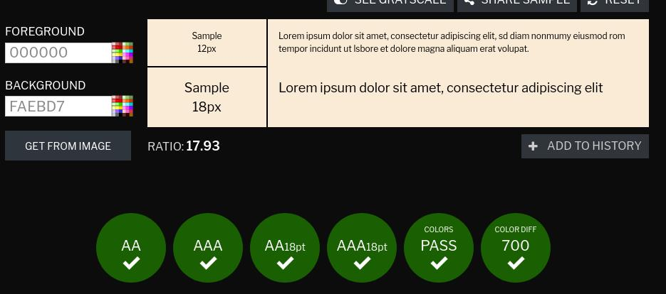Titeln är vit färg på en bild, så det går inte riktigt att kolla mot en specifik färgnyans, men lyckligtvis har contrastchecker en funktion där man kan hämta färger från en bild och om man provar med den bruna och gråa nyansen (eftersom de andra delarna av bilden inte används) så är även det 100% godkänt.
 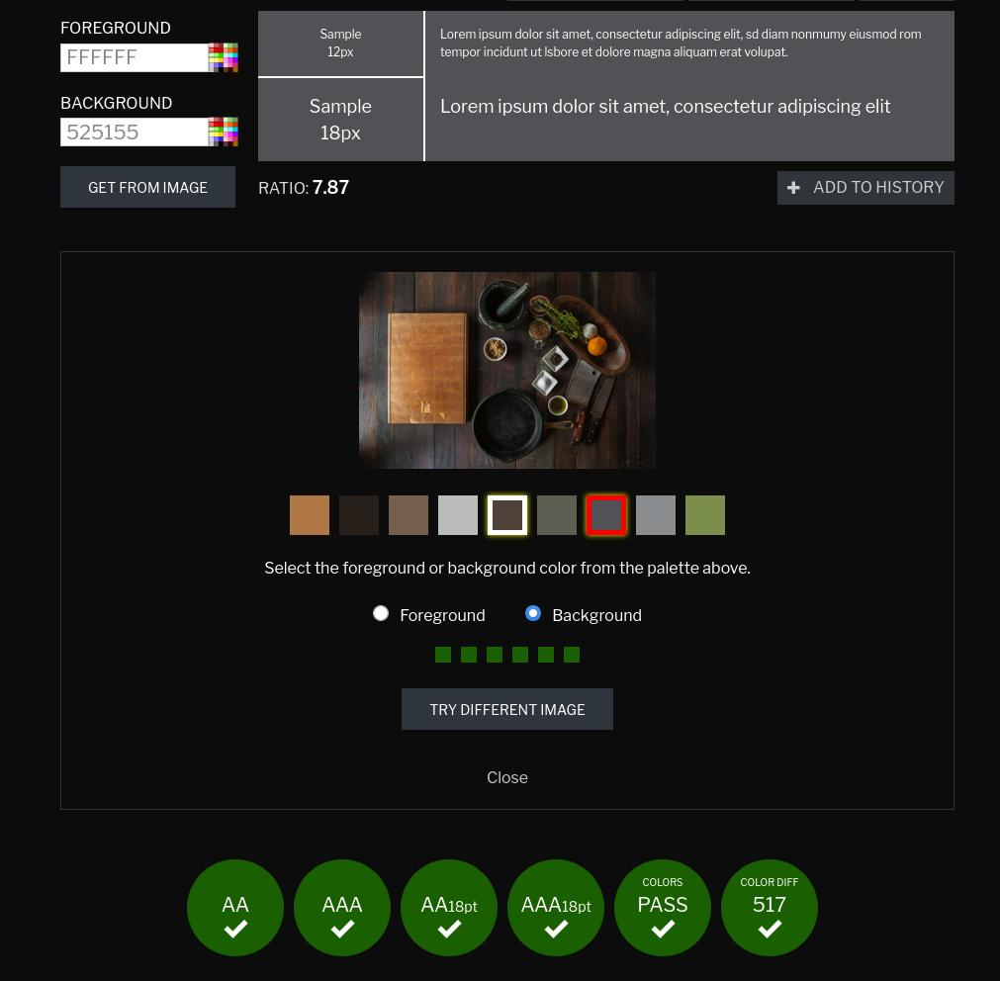
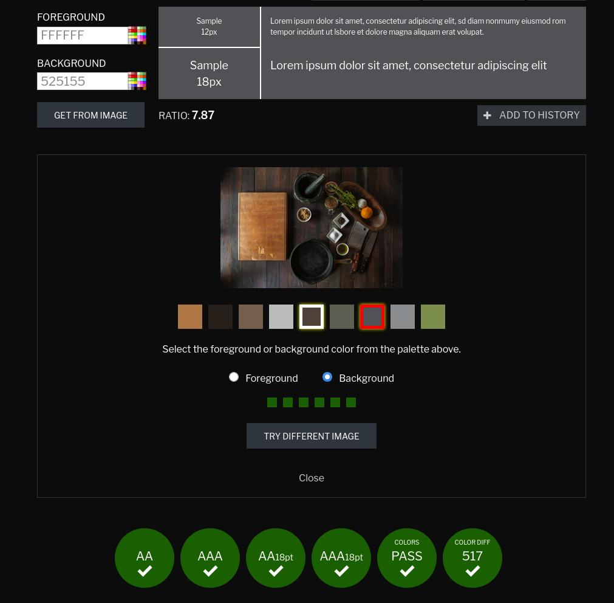
Jag har i huvudsak utvecklat sidan med firefox så det finns inte mycket mer att säga än att allting ser ut som det är tänkt (index.html är två bilder eftersom den behöver skrollas).
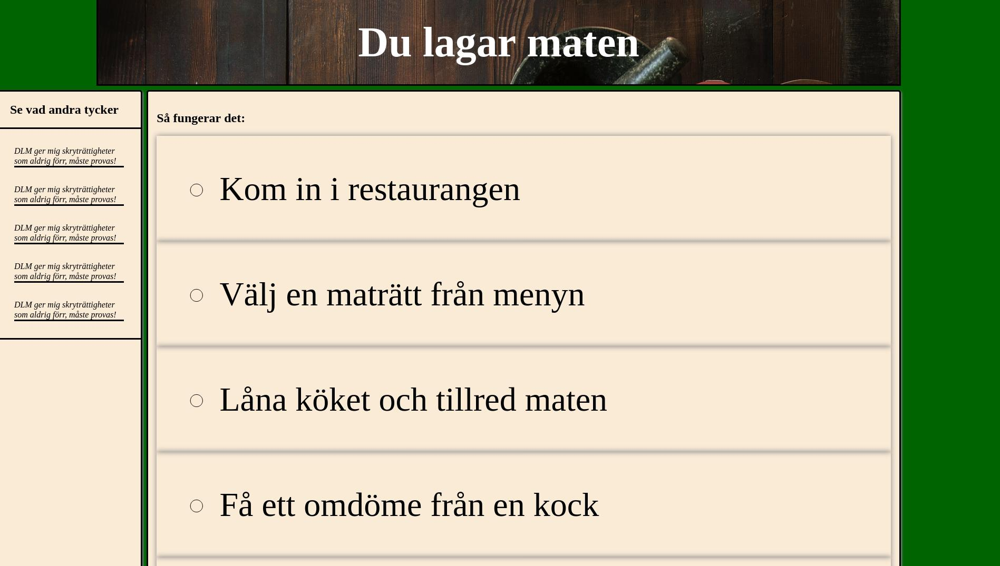 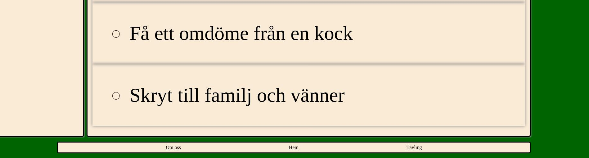 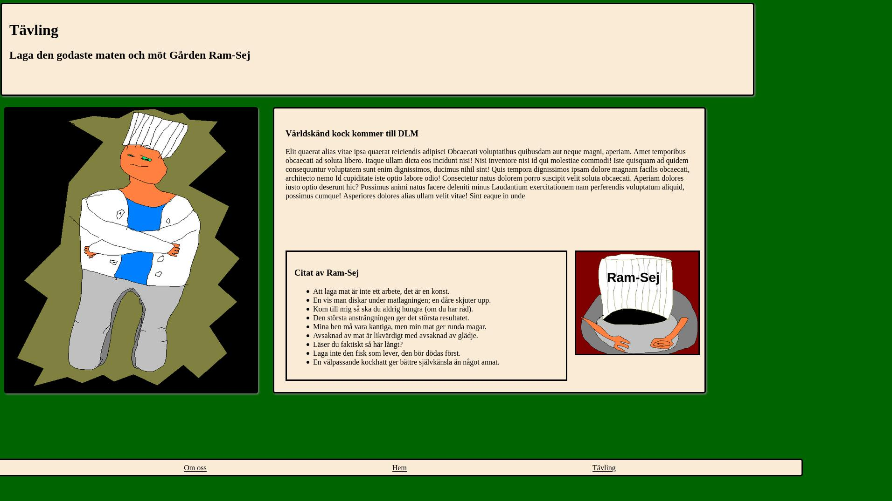Chrome gav mig ett problem på indexsidan jämfört med firefox. Css-gridets rader på indexsidan var placerade lite annorlunda i chrome. Efter en stund kom jag fram till att det var för att jag hade glömt ta bort css-propertyn grid-template-rows från containerelementet (efter att jag bestämde mig för att elementen skulle expandera dynamiskt). Av någon anledning valde firefox att ignorera den medan chrome följde den, men om man tog bort den fick man ett lika utseende på båda indexsidorna.
En annan skillnad jag märkte mellan chrome och firefox var att listorna var lite annorlunda. I chrome var punkterna mindre, och det var mer mellanrum mellan punkterna och texten. En googlesökning visar att detta helt enkelt är någonting annorlunda mellan olika webläsare och att det inte finns så mycket att göra åt saken. Om du vill kan du läsa en bugrapport i chromium (kärnan till chrome) som beskriver problemet här.
Jag fick även ett problem på om-oss sidan i chrome jämfört med firefox. I firefox placerades de båda loggorna i headern snyggt på sina platser, men i chrome stretchades de ut över hela headern vilket blev oerhört fult:
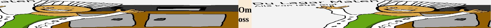Det visade sig att anledningen till detta var att jag aldrig explicit valde storlek på bilderna vilket ledde till att webläsarna använde deras default. Firefox använde "height: 100%", medan chrome använde "width: 100%". Genom att lägga till en explicit regel i mitt css-dokument lyckades jag få en likadan header i båda webläsarna.
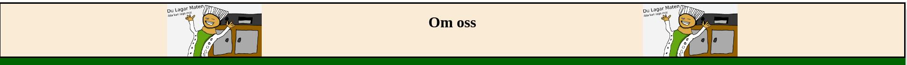Samma problem fast mindre tydligt fanns även i sektionen med utmärkelser. Chrome valde att använda "width: 100%" istället för "height: 100%" vilket enkelt löstes med en explicit regel.
Den tredje sidan var redan likadan.
Här är bilderna från chrome efter mina fixningar:
 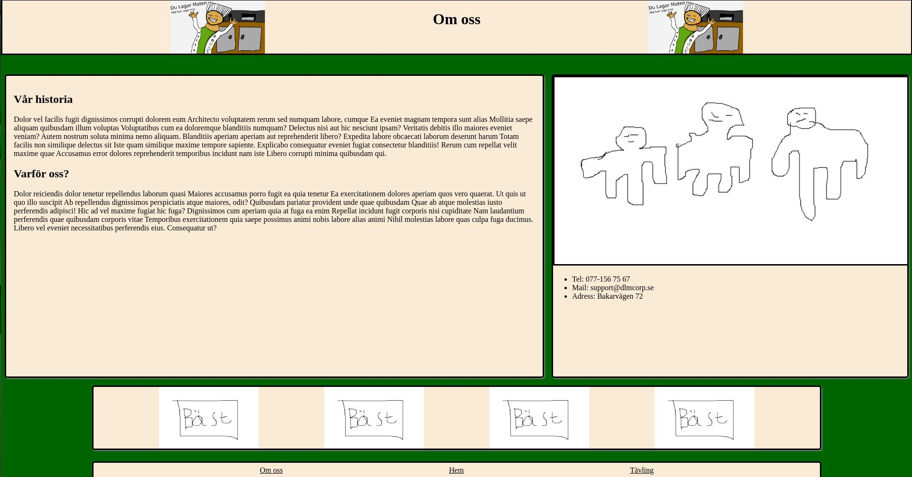
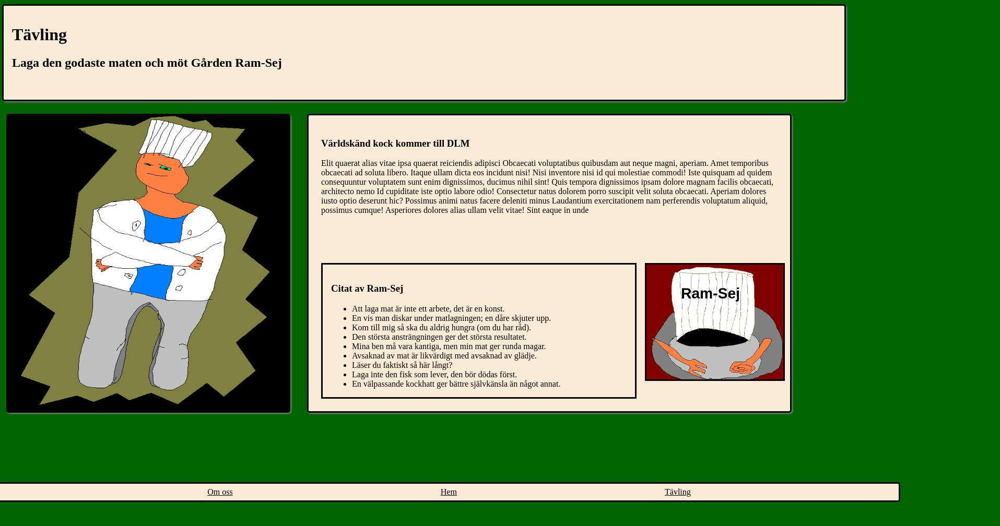
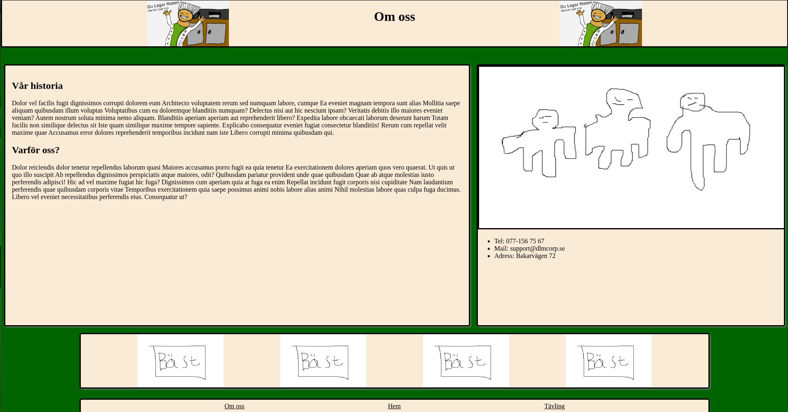
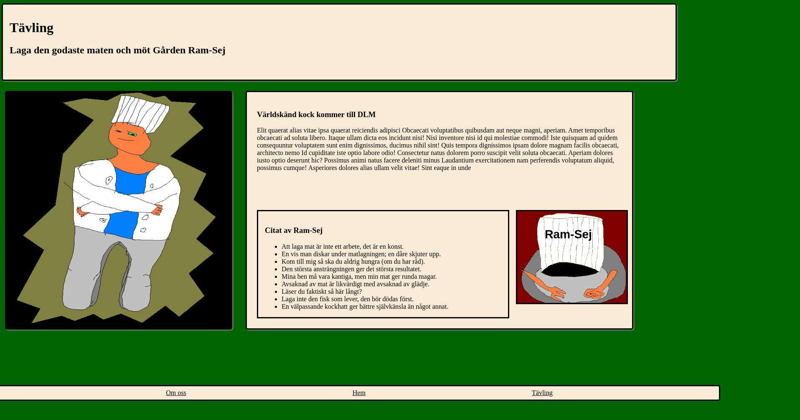
Uppenbarligen kan man inte använda den gamla versionen av microsoft edge ifall man har uppdaterat windows, så den här jämförelsen blir otroligt tråkig då den nya versionen av microsoft edge är baserad på chromium och därmed beter sig exakt som chrome. Bortsett från att jag provade den här webläsaren på en mindre skärm (min skoldator) är resultaten identiska sånär som på den inskjutna texten vid listpunkterna. Eftersom det numera egentligen bara finns tre webläsarmotorer (gecko i firefox, blink i chromium och webkit i safari) är det inte konstigt att hemsidan bara var annorlunda mellan firefox och chrome. Det hade varit intressant att testa i safari, men jag äger inte några appleprodukter.
Här är bilder från microsoft edge (på en lite mindre skärm dessutom):
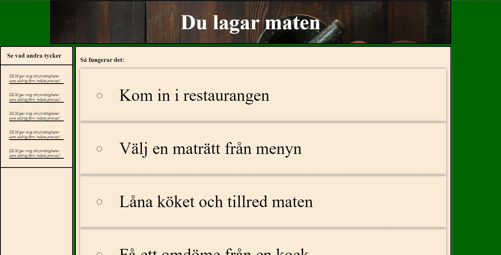 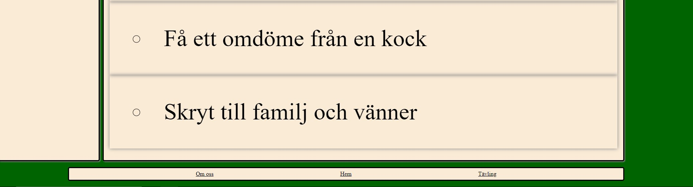 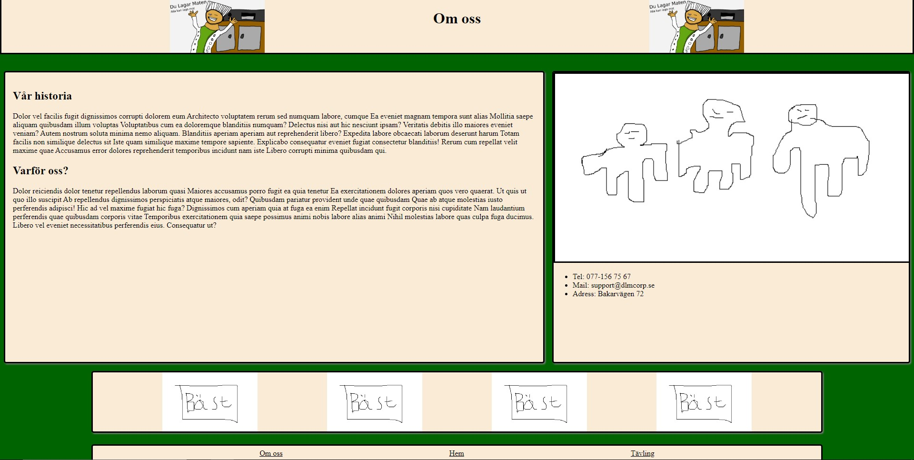 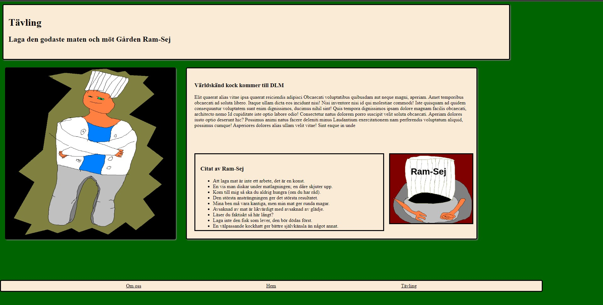index.html har inga fel, men den ger en varning för varje recension eftersom jag använde article utan en rubrik. De två alternativen jag kan se då är att recensioner antingen inte ska vara elementet article (men det är den bästa semantiska taggen jag kunde komma på), eller att recensionerna bör ha en rubrik. Jag tycker det känns som ett rimligt alternativ att recensioner ska ha rubriker, men eftersom det inte riktigt är recensioner, utan snarare kommentarer från kunder tycker jag inte att det passar i det här fallet. Det är möjligt att jag skulle kunna byta ut article mot en div, men jag tycker article passar bättre (eller så har jag bara helt missförstått syftet med article).
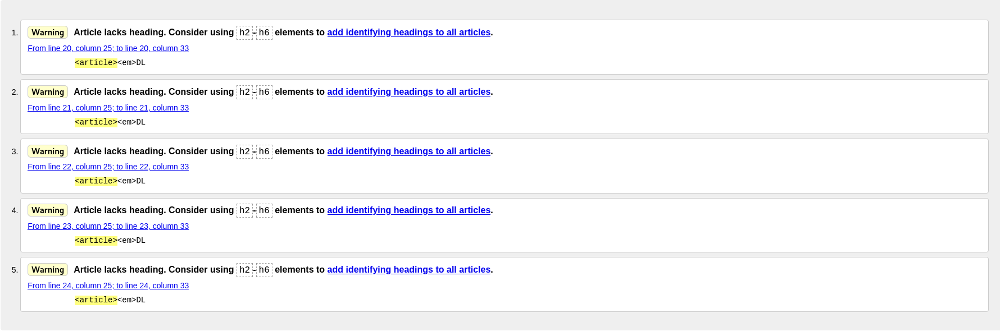about.html fick samma varning som index.html fast för en sectioni istället för article. Den här gången håller jag inte med eftersom den här typen av "bilder på utmärkelser längst ner på sidan" är någonting som jag har sett på flera stora sidor. Det är möjligt att det inte ska vara en section, men eftersom det är en del av sidan som grupperar ihop liknande grejer tycker jag att section är ett passande element.

competition.html fick också samma varning på en section. Återigen håller jag inte riktigt med eftersom jag tycker det är väldigt tydligt att alla delar av informationssektionen behandlar Gården Ram-Sej, men att jag konsekvent får samma varning kan naturligtvis innebära att jag helt enkelt använder de semantiska taggarna fel. Jag håller inte med så jag tänker inte ändra sidan, men till nästa projekt tänker jag validera koden mer än en gång i slutet så att jag förhoppningsvis kan använda taggarna lite mer som det är tänkt (dock tycker jag inte att det är så mycket fel på nuvarande användning).

Mitt css hade inte varken några fel eller varningar att ta hänsyn till:
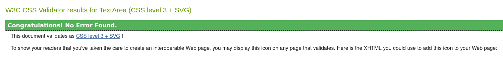Sett både till design, kodkvalitet och ambitionsnivå skulle jag säga att det här är mitt största och bästa verk inom webutveckling hittills, men det betyder inte att processen har gått felfritt. De olika sidorna har gått igenom många revisioner (flera gånger har saker ändrats fram och tillbaka), och vissa saker är jag fortfarande inte helt nöjd med, men jag skulle ändå säga att jag har gjort mitt bästa. Eftersom jag var helt ny till webutveckling i början av kursen har en av de viktigaste sakerna för mig varit att bli mer bekväm med html och (framförallt) css, och det skulle jag säga att jag har blivit. Dels har jag lärt mig mer rent tekniskt i form av olika properties och liknande, men framförallt har jag fått en bättre känsla för hur webläsaren tolkar css. Detta har gjort det enklare för mig att felsöka och skriva css.
Det största hindret i mitt arbete har nog egentligen varit brist på planering. Dels därför att jag inte riktigt förstod att planeringen högst upp i det här skulle fyllas i första lektionen (vi hade vikarie), vilket ledde till att jag bara fyllde i den vecka för vecka istället, men jag tror också att mina skisser var lite för detaljlösa. Jag syftar inte på att jag någon gång behövde lägga till två kolumner i mitt grid som jag missade i skissen, utan snarare på en lite större helthet. Det jag har gjort i mina skisser är att rita ut var mina olika block ska sitta samt vad blocken ska vara för taggar, men jag har märkt att det fortfarande lämnar väldigt mycket att lista ut under programmeringen. Det har gått bra att översätta skisserna till kod (förutom tredje sidan där jag med flit valde att avvika lite, och även där var det mest att jag förskjöt blocken till vänster), men mindre detaljer som t.ex textstorlek och färger finns inte med i mina skisser även om de nog egentligen borde det. Eftersom det inte fanns med ledde det till att jag spenderade ganska mycket tid på att gå fram och tillbaka mellan olika designer på själva sidan. Fördelen med det är såklart att det blir enklare att visualisera på en faktisk hemsida, men nackdelen är att det går långsammare. Det är möjligt att man inte behöver ha alla detaljer helt fastspikade innan man börjar skriva kod, men till nästa gång vill jag göra skisserna lite mer detaljerade.
En annan mer konkret sak som är värd att fundera över är mitt val att inte sätta en bestämd storlek på indexsidan. Som nämnt tidigare i dokumentet valde jag att låta elementen växa själva (och ge en viss storlek till andra element som inte växte tillräckligt) istället för att ge gridet en bestämd storlek då flera av elementen inte hade fått plats på mindre (under 27") skärmar. Jag gick fram och tillbaka mellan olika lösningar väldigt mycket här, men i slutändan var det enda jag kunde få att fungera att välja bestämma grid-template-columns, men låta raderna växa för sig själva. Min lösning känns lite "hackig", och inte riktigt korrekt, men den fungerar bortsett från en detalj, nämligen att sidan tar slut lite för tidigt ifall hemsidan faktiskt ryms på skärmen. Jag "löste" detta genom att sätta bakgrunsfärgen på body:n vilket gör att det ser ut som att den fungerar, men footern kommer fortfarande för tidigt. En eventuell lösning på det skulle vara att använda css position propertyn för att fästa den vid botten, men då passar den inte längre in i gridet vilket skulle göra att jag inte kan dela footer med de andra två sidorna. Jag har som sagt tänkt igenom många olika alternativ och försökt välja det minst dåliga. En annan grej jag också funderade på var att jag hade kunnat använda mig av css-regeln "overflow-y: scroll;" för elementen som behövde expandera, men jag valde emot det eftersom jag inte tycker att det hade varit snyggt alls. Här har jag faktiskt inga förbättringsförslag eftersom jag redan har provat alla mina idéer.
En sak som är värd att nämna är att jag tog mig tiden att styla sidan mer än vad som var nödvändigt för uppgiften (då detta inte är gränssnittsdesign). Jag är nöjd med resultatet, men det tog tid ifrån annat som jag också behövde göra. Hade jag låtit bli att försöka göra sidan snygg hade jag kunnat bli klar mycket snabbare, men jag är ändå glad att jag tog mig tiden för det eftersom design är en väldigt viktig del av webutveckling. Eftersom jag inte kommer läsa gränssnittsdesign är det bra om jag får in i alla fall lite övning.
Det finns såklart ett antal grejer som kan nämnas här, men det mesta som är värt att diskutera står ovan. Den första sidan tog överlägset längst tid, dels eftersom jag använde den både till att testa designer (som jag som sagt borde ha gjort i skissform), och dels eftersom jag hela tiden brottades med det självförstorande gridet. De andra sidorna gick betydligt snabbare att skapa (om man bortser från loggan till om-oss sidan som tog ganska lång tid), dels för att designen redan var klar (då alla sidor använder t.ex samma färger), men också för att jag helt enkelt blev mer och mer van vid css. Jag borde verkligen ha läst uppgiftsbeskrivningen lite noggrannare från början så att jag hade vetat t.ex att alla 3 sidor ska dela ett css stylesheet, så det får jag göra bättre nästa gång.
I slutändan finns det många saker jag hade kunnat göra annorlunda. Vissa saker (som till exempel att göra mer noggranna skisser) hade med ganska stor säkerhet hjälpt. Andra saker hade kanske hjälp eller kanske inte. Det är mycket svårare att skriva om vad jag hade kunnat göra bättre i produkten än i processen eftersom jag har ändrat koden varje gång jag har kommit på någonting som kan göras bättre (dock så har jag varit väldigt dålig på att skriva ner hur mina olika iterationer har sett ut, så det får jag bli bättre på). Om jag ska säga någonting annat som jag väldigt gärna blir bättre på är det att inte skriva så upprepande (just nu vore det väldigt jobbigt att byta förgrundsfärg eftersom jag skulle behöva byta färg på varje element för sig, men så vitt jag vet har inte css variabler) och att använda plugins och dylikt för att faktiskt kunna skriva koden effektivare (emmet har hjälp väldigt mycket i det här projektet).